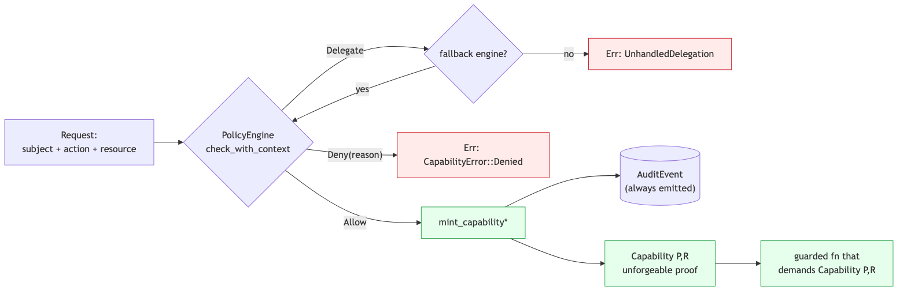
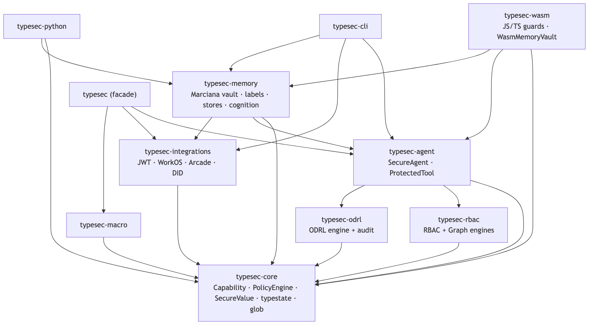
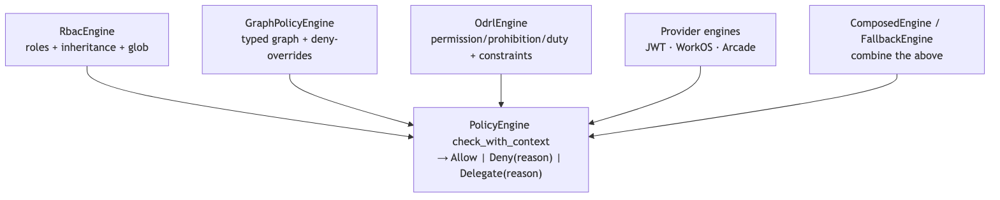
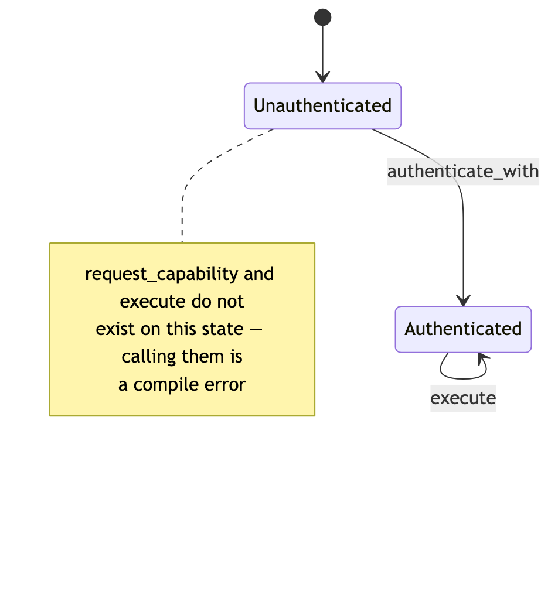
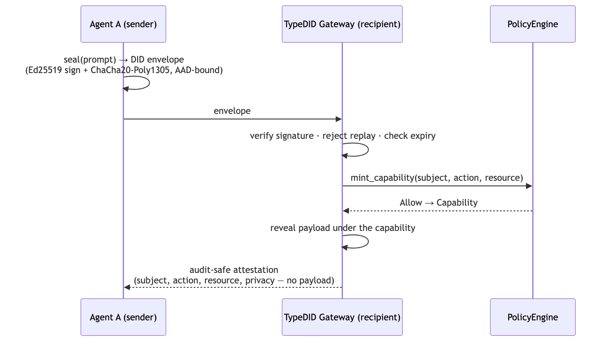

Before the prose tour, five pictures of the load-bearing pieces. The Mermaid sources are inline below (the book build renders them; GitHub renders them too).
The single most important diagram is the capability-minting flow. A
Capability is unforgeable proof, and the only production
path to one runs a PolicyEngine and emits an audit event; a
denial is a typed error, never a capability.

The workspace is eleven crates layered on typesec-core.
The umbrella typesec crate re-exports the core, policy,
agent, macro, and integration surfaces behind feature flags;
typesec-memory and typesec-wasm remain
purpose-built distribution surfaces rather than being hidden inside the
facade.

Every engine — RBAC, the graph engine, ODRL, and the provider-backed
engines — implements the same check_with_context contract
returning Allow, Deny, or
Delegate, so they compose under ComposedEngine
and FallbackEngine.

SecureAgent<S> is a typestate machine: the
capability-requesting and execute methods exist only on the
Authenticated state, so calling them on an unauthenticated
agent is a compile error, not a runtime check.

When agents collaborate, a prompt is sealed into a DID envelope whose ciphertext is AEAD-bound to its routing and timing identity; the gateway verifies signature, replay, and expiry, then reveals the plaintext only under a typed capability and returns an audit-safe attestation that records who did what to which resource without exposing the payload.
